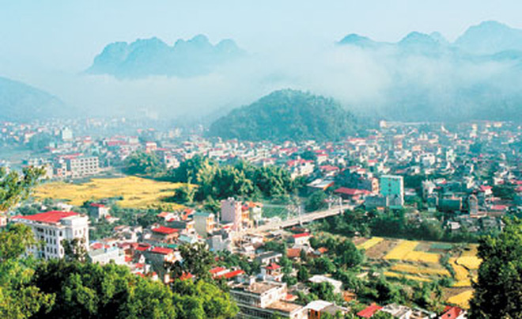

HELLO, IT'S NICE TO MEET YOU
Sơn La có địa hình phức tạp với những dãy núi non cao nguyên, thung lũng sâu, và hệ thống sông suối phong phú. Đây cũng là một trong những vùng đất nổi tiếng với văn hóa các dân tộc thiểu số, như Thái, Mông, H'Mông, Dao, và Khơ Mú. Với cộng đồng đa dạng về văn hóa và truyền thống, Sơn La là nơi tập trung nhiều lễ hội truyền thống sôi động và độc đáo. Ngoài ra, Sơn La còn nổi tiếng với các điểm du lịch thiên nhiên như hồ Sơn La, thác Dải Yếm, hồ Mộc Sương, và thung lũng Mường Lò. Những điểm này không chỉ mang lại trải nghiệm tuyệt vời cho du khách mà còn là nguồn cảm hứng không ngừng cho những ai yêu thích khám phá thiên nhiên hoang sơ.
Khi nhắc đến vùng miền Tây Bắc, lòng người không thể không được lôi cuốn bởi vẻ đẹp hùng vĩ của núi rừng,
sự đa dạng văn hóa của các dân tộc thiểu số và đặc biệt là hương vị đậm đà, tinh tế của ẩm thực Sơn La. Tỉnh Sơn La,
nằm tại vùng cao nguyên phía Tây Bắc của Việt Nam, không chỉ là điểm đến lý tưởng cho những ai yêu thích khám phá thiên nhiên hoang sơ mà còn là
nơi mang đến những trải nghiệm ẩm thực độc đáo, gắn liền với văn hóa và đời sống của người dân nơi đây.
Nhưng không chỉ là những món ăn ngon, ẩm thực Sơn La còn là nơi giao thoa của nhiều nền văn hóa, biểu tượng qua
việc sử dụng các nguyên liệu tự nhiên và cách chế biến riêng biệt của mỗi dân tộc.
Mỗi món ăn ở đây không chỉ đơn giản là hương vị, mà còn là một cách để kể chuyện về quá khứ, về đời sống và văn hóa của mỗi dân tộc trên vùng đất Sơn La.
Vậy làm sao có thể khám phá hết được vẻ đẹp ẩm thực của Sơn La trong một lần đến đây?
Chắc chắn rằng, mỗi món ăn, mỗi hương vị sẽ để lại trong lòng bạn một dấu ấn khó quên về vùng đất này.
Hãy để VN Foods giúp bạn hiểu hơn về văn hoá ẩm thực nơi đây nhé!